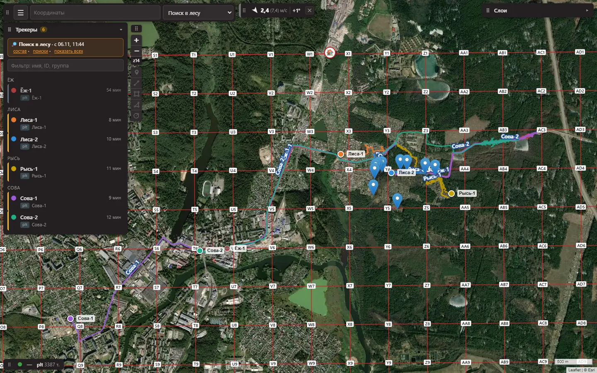
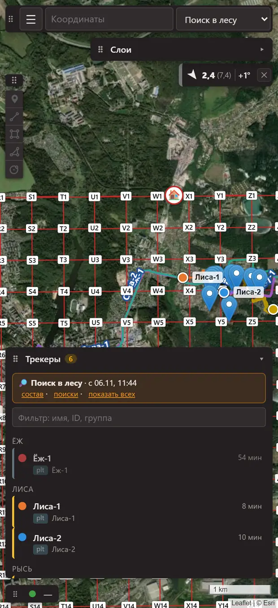

DMR Trekking карта штаба поисково-спасательного отряда
Одна карта для радиста и штаба: где группы, кто давно не выходил на связь, где от штаба будет связь. Работает на ноутбуке и на телефоне, без интернета. Ниже — настоящие окна программы.
- Работает без интернета
- Ноутбук и телефон умеют одно и то же
- Все рации DMR на одной карте

Телефон
На телефоне та же карта и те же окна
Радист в поле видит то же, что штаб. Если ноутбука нет, штабом становится телефон: он сам принимает координаты раций через «свисток» и раздаёт карту другим телефонам по Wi-Fi штаба.
- Список групп внизу, карта сверху — удобно одной рукой.
- Карты и рельеф переходят с ноутбука штаба, интернет не нужен.
- Тревога «Проверь связь» срабатывает и при погашенном экране.
- Резервная копия поиска сохраняется сама.

Из чего состоит
Ноутбук в штабе, телефон у радиста, рации у групп
Ничего не нужно подключать к интернету. Рации групп работают как обычно, а программа собирает их координаты на одну карту.
главная карта
Карта района, группы и их треки, журнал связи, расчёт связи от штаба. Хранит весь поиск и раздаёт карту телефонам.
та же карта в руке
Подключается к ноутбуку по Wi-Fi штаба. Нет ноутбука — сам становится штабом.
координаты из эфира
Рации DMR присылают координаты при выходе в эфир. Небольшая приставка к рации штаба («свисток») передаёт их в программу по Bluetooth.
Возможности
Что видит штаб и чем это помогает в поиске
Кто где и кто давно молчит
- Координаты раций DMR приходят на карту сами, через «свисток» у рации штаба. Ретранслятор и диспетчерская не нужны.
- Журнал выхода на связь ведётся сам: кто, когда, с координатами или без. Туда же записываются радиограммы.
- Свежесть отметки видна по цвету: зелёная — свежая, жёлтая — старше 3 минут, серая — старше 15 минут.
- Тревога «Проверь связь»: если группа молчит дольше заданного времени, вверху появляется красная полоса и звучит сигнал.
- Штаб может запросить координаты у одной рации или у всех сразу. Программа следит, чтобы запросы не забили эфир.
- Посторонние станции не появляются на карте как группы.
Весь поиск в одном месте
- Путь каждой группы рисуется треком, видно, сколько она прошла.
- Сетка квадратов, участки, метки и линии — на карте. Сетку и треки из OziExplorer, навигаторов и Google Earth программа загружает сама.
- Скачки GPS отсеиваются, трек можно разрезать и склеить.
- Участок или трек выгружается в навигатор группы.
- У каждого поиска свои группы, треки, журнал и рисунки. Закончили — поиск уходит в архив одним файлом.
Где будет связь со штабом
- Одно нажатие на значок штаба — и видно, куда достаёт связь, с учётом рельефа и кривизны Земли.
- Можно выбрать, что проверяем: две носимые рации, машину с антенной на крыше или мачту.
- Нажмёшь на место в тени — программа скажет, что закрывает связь и что поможет: куда отойти или на сколько поднять антенну.
- Для отметки группы — «светофор» связи со штабом: будет, на грани или скорее нет, и почему.
Это расчёт по рельефу, а не гарантия связи. Важные места проверяют радиопроверкой.
Сотовая связь: где вышки и откуда сигнал
- На карте — базовые станции сотовой связи по всей России, из реестра заключений Роспотребнадзора.
- Станцию можно найти по номеру так, как его пишут операторы.
- Замеры приложения NetMonitor загружаются на карту: видно, где работала сота и откуда она «бьёт».
- Карты покрытия операторов — поверх любой карты.
Расчёт по замерам справочный: на экране всегда написано, что он может отличаться от действительности.
Подробные карты без интернета и погода
- Карта OpenStreetMap всей России — на ноутбуке и телефоне: тропы, грунтовки, болота, садовые товарищества.
- Спутниковые снимки, Генштаб, топокарты; поверх — ЛЭП, просеки, лесные кварталы.
- Рельеф без интернета: карта высот и профиль маршрута.
- Погода у штаба: ветер, температура, осадки по часам.
- Грозы и осадки: радары с прогнозом на 2 часа, молнии, облака.
Слоям с пометкой VPN нужен VPN: без него данные не приходят.
Для работы с авиацией и беспилотниками
- «Ковёр» — предупреждения о закрытии неба только по аэропортам рядом со штабом, обычно в радиусе 100 км.
- Погода ближайших аэродромов.
- Погода для беспилотника по часам: «можно», «осторожно» или «нельзя».
- Зоны, где беспилотникам летать нельзя или ограничено.
Пробная функция: включается отдельно и работает, когда есть интернет.
Один день поиска
Как программа работает в штабе — от развёртывания до архива
| Время | Что происходит | Штаб видит |
|---|---|---|
| 07:40 | Развернули штаб. Ноутбук открыт, отмечено «Штаб здесь». Карты района и рельеф уже на месте. Телефоны подключились к той же карте по Wi-Fi. | Подробную карту района и свою точку |
| 07:55 | Пришли рации. «Свисток» подключён к рации штаба. Группы выходят в эфир и сами появляются в списке с координатами. | Список групп и их метки на карте |
| 08:10 | Проверили связь от штаба. Одно нажатие на значок штаба — и видно, где группа уйдёт в тень. | Зелёные, жёлтые и красные зоны вокруг штаба |
| 08:30 | Группы ушли на задачи. Сетка квадратов загружена, участки выгружены в навигаторы. Треки пишутся сами. | Участки, треки групп и пройденное расстояние |
| 09:00–16:00 | Выходы на связь и тревоги. Журнал ведётся сам. Группа молчит дольше заданного — красная полоса и звук. | Кто давно не выходил на связь и где его последняя отметка |
| 15:30 | Группы возвращаются. Видно, кто дальше всех от штаба и сколько каждая прошла за день. | Положение и треки всех групп |
| 19:00 | Поиск в архив. Треки, метки, сетка и журнал — одним файлом. На следующий день можно продолжить с того же места. | Полную картину дня для разбора |
Время у шагов — для примера.
Надёжность
Чтобы на программу можно было опереться
Проверяется автоматически
Каждое изменение проверяется автоматически, каждая версия перед выходом — на ноутбуке и телефоне.
Работает без интернета
Карты, рельеф, базы вышек и данные поиска хранятся на устройствах штаба. Копия базы сохраняется сама.
Телефон умеет то же, что ноутбук
Одна карта и одни окна. Если ноутбук недоступен, штаб продолжает работу на телефоне.
Данные проверены
Карты и базы приходят с подписью разработчика. Подменённый или испорченный файл программа не поставит.
DMR Trekking — вспомогательный инструмент штаба
- Данные справочные. Координаты, треки и расчёты — радиогоризонт, покрытие связи, NetMonitor, базовые станции, погода — могут быть неточными, запаздывать и не совпадать с действительностью.
- Решения принимает штаб. Руководитель поиска и штаб решают по регламентам отряда и проверенным данным. Программа их не заменяет.
- «Как есть». Программа предоставляется без гарантий бесперебойной работы, полноты и точности данных. Разработчик не несёт ответственности за решения, принятые на основе данных программы, и за их последствия — в пределах, допускаемых законом.
- Данные третьих лиц. Карты, реестры и базы используются на условиях их владельцев.
Тот же текст программа показывает при запуске.